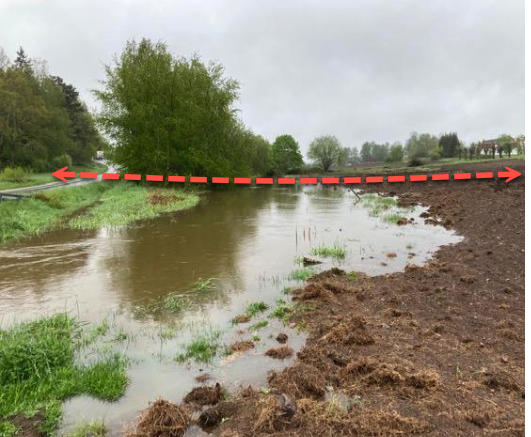
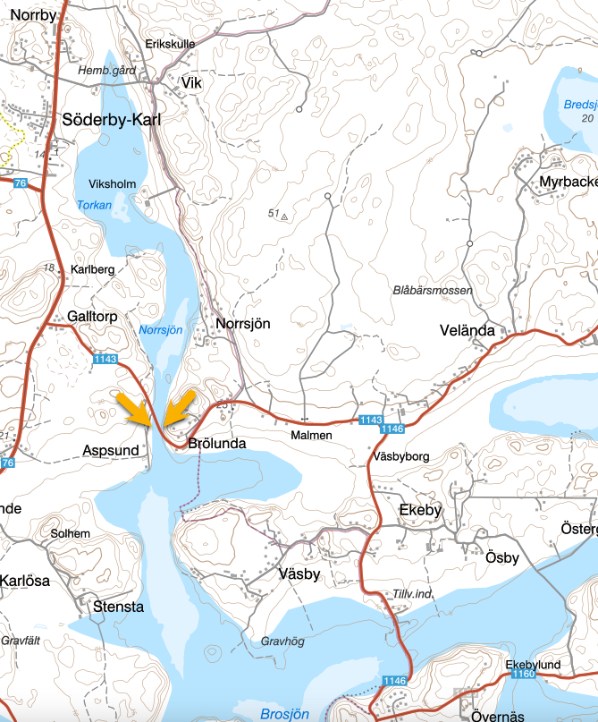
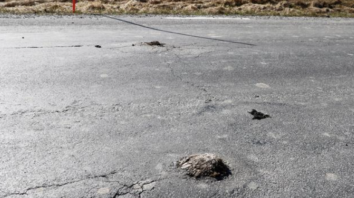

Pålspärr

Aspsundet anses av arkeologer under sen vikingatid ha skyddats (vid sitt smalaste parti) av en pålspärr mellan Brölundaberget och Smibacken (backen med den gamla smedjan). Spärren korsade nuvarande ån en bit söder om bilbron. Än idag syns topparna av några av dessa pålar i brovägen på östra sidan av ån där de varje vår har tryckts upp någon cm av tjälen och slipas ned av trafiken.
Hagen på västra sidan av ån heter sedan gammalt Pålhagen vilket är omnämnt i gamla dokument och kartor. Förmodligen stack det upp en rad av pålar i ängen under äldre tid. Pålarna ska ha varit spetsade i bägge ändar och hade hullingar för att göra det svårare att dra upp dessa eller att få loss en båt som fastnat. Fältbesök av Riksantikvarieämbetet gjordes 1977 och då syntes ännu pålar på bägge sidor av ån (förutom de pålar som är satta att stadga upp åkanten)
[7]. Pålspärrar är inte unikt utan byggdes på många ställen under sen vikingatid som skydd mot fientliga strandhugg. Oftast kom dessa attacker från Baltikum som ännu inte kristnats vid den tiden.

SGU:s karta över ungefärlig strandlinje visar tydligt att Aspsundet var en smal parti där det var praktiskt att bygga en spärr av pålar och kanske också uttjänta skepp som sänktes.
Placeringen av spärren liksom byn sammanfaller med gränsen mellan Lyhundra och Bro-Vätö skeppslag. Dvs försvarsindelningen vid denna tid. Möjligen med tanke på båtfynd vid Vik så förvarade Lyhundra sina ledungsskepp uppströms. Kanske var det dessa, Söderby kyrka (troligen en i trä på samma plats som nuvarande) samt rikare bebygelse kring kyrkan och uppåt man ville skydda. Vid denna tid förvarade man också de viktiga seglen till ledugnsskeppen torrt inomhus i kyrkorna. Kyrkorna var också i många fall byggda som försvarsanläggning och det här kan ha varit ett yttre försvarsverk för att inte bli överrraskade.

Norrtelje tidning hade 25 april 2018 ett reportage om pålspärren i Aspund och intervju med marinarkeolog Gunilla Larsson där Gunilla berättar:
Så kallade Pålspärrar - alltså tätt nerbankade pålar – slogs ner i vattenleder för att förhindra fientliga båtar att ta sig längre upp i farleden. Toppen på pålarna låg strax under vattenytan. Fiender hade mer djupgående båtar än vikingarna som lätt seglade över spärren. Det finns flera exempel på detta fenomen. Bland annat i Åkersberga och vid Penningby, berättar Gunilla Larsson som skrivit om fenomenet i en avhandling..
Från 1000-talet till 1200-talet var det vanligast för då var det oroliga tider med härjningar. Det finns äldre och yngre men de allra flesta är anlagda vid den tiden.